정보처리기사(구) (2017-05-07 기출문제)
1과목: 데이터 베이스
1. 트랜잭션의 특성 중 둘 이상의 트랜잭션이 동시에 병행 실행되는 경우 어느 하나의 트랜잭션 실행 중에 다른 트랜잭션의 연산이 끼어들 수 없음을 의미하는 것은?
- log
- consistency
- isolation
- durability
(정답률: 80%)

2. 조건을 만족하는 릴레이션의 수평적 부분집합으로 구성하며, 연산자의 기호는 그리스 문자 시그마(σ)를 사용하는 관계대수 연산은?
- Select
- Project
- Join
- Division
(정답률: 73%)
3. 시스템 카탈로그에 대한 설명으로 틀린 것은?
- 시스템 카탈로그의 갱신은 무결성 유지를 위하여 SQL을 이용하여 사용자가 직접 갱신하여야 한다.
- 데이터베이스에 포함되는 데이터 객체에 대한 정의나 명세에 대한 정보를 유지 관리한다.
- DBMS가 스스로 생성하고 유지하는 데이터베이스 내의 특별한 테이블의 집합체이다.
- 카탈로그에 저장된 정보를 메타 데이터라고도 한다.
(정답률: 84%)
4. 트랜잭션들을 수행하는 도중 장애로 인해 손상 된 데이터베이스를 손상되기 이전의 정상적인 상태로 복구시키는 작업은?
- Recovery
- Commit
- Abort
- Restart
(정답률: 86%)
5. 관계 해석에 대한 설명으로 틀린 것은?
- 튜플 관계 해석과 도메인 관계 해석이 있다.
- 질의에 대한 해를 구하기 위해 수행해야 할 연산의 순서를 명시해야 하는 절차적인 언어이다.
- 릴레이션을 정의하는 방법을 제공한다.
- 수학의 predicate calculus 에 기반을 두고 있다.
(정답률: 69%)
6. 어떤 릴레이션 R의 모든 조인 종속성의 만족이 R의 후보 키를 통해서만 만족된다. 이 릴레이션 R은 어떤 정규형의 릴레이션인가?
- 제 5정규형
- 제 4정규형
- 제 3정규형
- 보이스-코드정규형
(정답률: 60%)
7. Which of the following does not belong to the DML statement of SQL?
- DELETE
- ALTER
- SELECT
- UPDATE
(정답률: 79%)
8. 데이터 무결성 제약조건 중 “개체 무결성 제약” 조건에 대한 설명으로 맞는 것은?
- 릴레이션 내의 튜플들이 각 속성의 도메인에 지정 값만을 가져야 한다.
- 기본키에 속해 있는 애트리뷰트는 널 값이나 중복 값을 가질 수 없다.
- 릴레이션은 참조할 수 없는 외래키 값을 가질 수 없다.
- 키 속성의 모든 값들은 서로 같은 값이 없어야 한다.
(정답률: 78%)
9. E-R 모델의 표현 방법으로 옳지 않은 것은?
- 개체타입 : 사각형
- 관계타입 : 마름모
- 속성 : 오각형
- 연결 : 선
(정답률: 86%)
10. 병행제어의 목적으로 옳지 않은 것은?
- 시스템 활용도 최대화
- 데이터베이스 공유도 최소화
- 사용자에 대한 응답시간 최소화
- 데이터베이스 일관성 유지
(정답률: 82%)
11. 순서가 A, B, C, D로 정해진 입력 자료를 push, push, pop, push, push, pop, pop, pop 순서로 스택연산을 수행하는 경우 출력 결과는?
- B D C A
- A B C D
- B A C D
- A B D C
(정답률: 79%)
12. 다음 설명이 의미하는 것은?
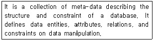
- Interface
- Schema
- Transaction
- Domain
(정답률: 81%)
13. 다음 그림에서 트리의 차수는?
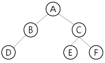
- 1
- 2
- 3
- 6
(정답률: 82%)
14. 사용자 X1에게 department 테이블에 대한 검색 연산을 회수하는 명령은?
- delete select on department to X1;
- remove select on department from X1;
- revoke select on department from X1;
- grant select on department from X1;
(정답률: 77%)
15. 스키마, 도메인, 테이블을 정의할 때 사용되는 SQL 문은?
- SELECT
- UPDATE
- MAKE
- CREATE
(정답률: 79%)
16. 릴레이션의 특징으로 거리가 먼 것은?
- 모든 튜플은 서로 다른 값을 갖는다.
- 모든 속성 값은 원자값이다.
- 튜플 사이에는 순서가 없다.
- 각 속성은 유일한 이름을 가지며, 속성의 순서는 큰 의미가 있다.
(정답률: 78%)
17. 데이터베이스의 물리적 설계 단계와 거리가 먼 것은?
- 저장 레코드 양식 설계
- 레코드 집중의 분석 및 설계
- 개념 스키마 모델링 수행
- 접근 경로 설계
(정답률: 76%)
18. 해싱에서 충돌로 인해 동일한 홈 주소를 갖는 레코드들의 집합을 의미하는 것은?
- Slot
- Bucket
- Synonym
- Mapping
(정답률: 80%)
19. 다음 트리를 Preorder 운행 법으로 운행할 경우 가장 먼저 탐색되는 것은?
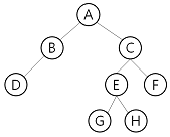
- A
- B
- D
- G
(정답률: 74%)
20. 다음 자료에 대하여 선택(Selection) 정렬을 이 용하여 오름차순으로 정렬하고자 한다. 1회전 수행 결과는?
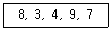
- 3, 4, 7, 8, 9
- 3, 4, 7, 9, 8
- 3, 4, 8, 9, 7
- 3, 8, 4, 9, 7
(정답률: 76%)
2과목: 전자 계산기 구조
21. 설치되어 있는 물리적인 메모리 용량보다 더 큰 용량의 프로그램을 실행할 수 있도록 보조 기억 장치 용량에 해당하는 용량만큼 메모리 용량을 확장하여 사용할 수 있도록 하는 기술은?
- 보조 메모리
- 연장 메모리
- 확장 메모리
- 가상 메모리
(정답률: 69%)
22. 디지털 IC의 특성을 나타내는 내용 중 전달지연 시간이 가장 짧은 것부터 차례로 나열한 것으로 옳은 것은?
- ECL - MOS - CMOS - TTL
- TTL - ECL - MOS - CMOS
- ECL - TTL - CMOS - MOS
- MOS - TTL - ECL - CMOS
(정답률: 43%)
23. 10진수 -456을 PACK 형식으로 표현한 것은?
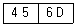
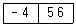
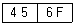
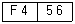
(정답률: 45%)
24. 인터럽트 처리 절차가 순서대로 옳게 나열된 것은?
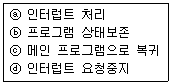
- ⓐ→ⓑ→ⓒ→ⓓ
- ⓐ→ⓒ→ⓑ→ⓓ
- ⓓ→ⓒ→ⓑ→ⓐ
- ⓑ→ⓓ→ⓐ→ⓒ
(정답률: 61%)
25. 가상 메모리를 사용한 컴퓨터에서 page fault가 발생하면 어떤 현상이 일어나는가?
- 요구된 page가 주기억장치로 옮겨질 때까지 프로그램 수행이 중단된다.
- 요구된 page가 가상메모리로 옮겨질 때까지 프로그램 수행이 중단된다.
- 현재 실행 중인 프로그램을 종료한 후 시스템이 정지된다.
- page fault라는 에러 메시지를 전송한 후에 시스템이 정지된다.
(정답률: 48%)
26. 다음은 0-주소 명령어 방식으로 이루어진 프로그램이다. 레지스터 X의 내용은? (단, 레지스터 A=1, B=2, C=3, D=3, E=2 이며, ADD는 덧셈, MUL은 곱셈을 의미한다.)
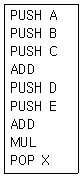
- 15
- 20
- 25
- 30
(정답률: 45%)
27. 전가산기를 구성하기 위하여 필요한 소자를 바르게 나타낸 것은?
- 반가산기 2개, AND 게이트 1개
- 반가산기 1개, AND 게이트 2개
- 반가산기 2개, OR 게이트 1개
- 반가산기 1개, OR 게이트 2개
(정답률: 57%)
28. 메가플롭스(MFLOPS)의 계산식으로 옳은 것은?
- MFLOPS = (수행시간×106) / 프로그램내의부동소수점연산개수
- MFLOPS = 프로그램내의부동소수점연산개수 / (수행시간×106)
- MFLOPS = 수행시간 / (프로그램내의부동소수점연산개수×106)
- MFLOPS = (프로그램내의부동소수점연산개수×106) / 수행시간
(정답률: 38%)
29. 가상기억장치 (Virtual Memory System)를 도입함으로써 기대할 수 있는 장점이 아닌 것은?
- Binding Time을 늦추어서 프로그램의 Relocation을 용이하게 쓴다.
- 일반적으로 가상기억장치를 채택하지 않는 시스템에서의 실행 속도보다 빠르다.
- 실제 기억용량보다 큰 가상공간(Virtual Space)을 사용자가 쓸 수 있다.
- 오버레이(Overlay) 문제가 자동적으로 해결된다.
(정답률: 47%)
30. 기억장치가 1024 word로 구성되고, 각 word는 16bit로 이루어져 있을 때, PC, MAR, MBR의 bit 수를 각각 바르게 나타낸 것은?
- 16, 10, 10
- 10, 10, 16
- 10, 16, 16
- 16, 16, 10
(정답률: 58%)
31. 다음 중 interrupt 발생 원인이 아닌 것은?
- 정전
- Operator의 의도적인 조작
- 임의의 부프로그램에 대한 호출
- 기억공간 내 허용되지 않는 곳에의 접근 시도
(정답률: 47%)
32. 다음 인터럽트에 관한 설명 중 가장 옳은 것은?
- 인터럽트가 발생했을 때 CPU의 상태는 보존하지 않아도 된다.
- 인터럽트가 발생하게 되면 CPU는 인터럽트 사이클이 끝날 때까지 동작을 멈춘다.
- 인터럽트 서비스 루틴을 실행할 때 인터럽트 플래그(IF)를 0으로 하면 인터럽트 발생을 방지할 수 있다.
- 인터럽트 서비스 루틴 처리를 수행한 후 이전에 수행 중이던 프로그램의 처음상태로 복귀한다.
(정답률: 43%)
33. 자기 코어(core) 기억장치에서 1word가 16bit로 되어 있다면 몇 장의 코어 플레인(core plane)이 필요한가?
- 1장
- 4장
- 8장
- 16장
(정답률: 30%)
34. 중재동작이 끝날 때마다 모든 마스터들의 우선순위가 한 단계씩 낮아지고 가장 우선순위가 낮았던 마스터가 최상위 우선순위를 가지도록 하는 가변우선순위 방식은?
- 동등 우선순위(Equal Priority)방식
- 임의 우선순위(Random Priority)방식
- 회전 우선순위(Rotating Priority)방식
- 최소-최근 사용(Least Recently Used)방식
(정답률: 66%)
35. 수직 마이크로명령어 방식의 명령어가 다음의 형식을 갖는다면 이 제어장치는 최대 몇 개의 제어 신호를 동시에 생성할 수 있는가?
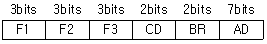
- 1개
- 2개
- 3개
- 4개
(정답률: 57%)
36. 1-주소 명령어에서는 무엇을 이용하여 명령어 처리를 하는가?
- 누산기
- 가산기
- 스택
- 프로그램 카운터
(정답률: 56%)
37. 명령어의 구성 중에서 주소(Operand)부에 속하지 않은 것은?
- 기억장치의 주소
- 레지스터 번호
- 사용할 데이터
- 연산자
(정답률: 46%)
38. 다음 마이크로 연산들은 명령어 사이클 중 어디에 해당하는가?
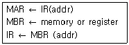
- 인출 사이클
- 간접 사이클
- 실행 사이클
- 인터럽트 사이클
(정답률: 31%)
39. 마이크로오퍼레이션이 실행될 때의 기준이 되는 것으로 가장 옳은 것은?
- Flag
- Clock
- Memory
- RAM
(정답률: 50%)
40. 데이터의 기억 형태에 따른 방식과 기억장치의 상호 연결이 옳지 않은 것은?
- 정적 기억장치 - SRAM
- 동적 기억장치 - DRAM
- 파괴적 읽기(destructive read out) - RAM
- 비파괴적 읽기(non-destructive read out)―ROM
(정답률: 52%)
3과목: 운영체제
41. 다음 설명에 가장 부합하는 디스크 스케줄링 기법은?
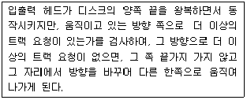
- SLTF
- Eschenbach
- LOOK
- SSTF
(정답률: 47%)
42. 3 개의 페이지 프레임을 갖는 시스템에서 페이지 참조 순서가 1, 2, 1, 0, 4, 1, 3 일 경우 FIFO 알고리즘에 의한 페이지 대치의 최종 결과는?
- 1, 2, 0
- 2, 4, 3
- 1, 4, 2
- 4, 1, 3
(정답률: 73%)
43. 로더(Loader)의 종류 중 다음 설명에 해당하는 것은?
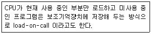
- 절대 로더(Absolute Loader)
- 재배치 로더(Relocating Loader)
- 동적 적재로더(Dynamic Loading Loader)
- 오버레이 로더(Overlay Loader)
(정답률: 65%)
44. 기억공간이 15K, 23K, 22K, 21K 순으로 빈 공 간이 있을 때 기억장치 배치 전략으로 "First Fit"을 사용하여 17K의 프로그램을 적재할 경우 내부단편화의 크기는 얼마인가?
- 5K
- 6K
- 7K
- 8K
(정답률: 74%)
45. O/S가 수행하는 기능에 해당하지 않는 것은?
- 사용자들 간에 데이터를 공유할 수 있도록 한다.
- 사용자와 컴퓨터 시스템 간의 인터페이스 기능을 제공한다.
- 자원의 스케줄링 기능을 제공한다.
- 목적 프로그램과 라이브러리, 로드 모듈을 연결하여 실행 가능한 로드 모듈을 만든다.
(정답률: 63%)
46. 선점 기법과 대비하여 비선점 스케줄링 기법에 대한 설명으로 옳지 않은 것은?
- 모든 프로세스들에 대한 요구를 공정히 처리한다.
- 응답 시간의 예측이 용이하다.
- 많은 오버헤드(Overhead)를 초래할 수 있다.
- CPU의 사용 시간이 짧은 프로세스들이 사용 시간이 긴 프로세스들로 인하여 오래 기다리는 경우가 발생할 수 있다.
(정답률: 39%)
47. 가상메모리의 교체정책 중 LRU(Least Recently Used) 알고리즘으로 구현할 때 그림에서 D 페이지가 참조될 때의 적재되는 프레임으로 옳은 것은? (단, 고정 프레임이 적용되어 프로세스에 3개의 프레임이 배정되어 있고, 4개의 서로 다른 페이지(A, B, C, D)를 B, C, B, A, D 순서로 참조한다고 가정한다.)
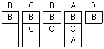
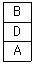
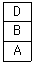
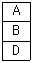
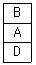
(정답률: 62%)
48. NUR 기법은 호출 비트와 변형 비트를 가진다. 다음 중 가장 나중에 교체될 페이지는?
- 호출 비트 : 0 , 변형 비트 : 0
- 호출 비트 : 0 , 변형 비트 : 1
- 호출 비트 : 1 , 변형 비트 : 0
- 호출 비트 : 1 , 변형 비트 : 1
(정답률: 54%)
49. 스케줄링 하고자 하는 세 작업의 도착시간과 실행시간이 다음표와 같다. 이 작업을 SJF로 스케줄링 하였을 때, 작업 2의 종료시간은? (단, 여기서 오버헤드는 무시한다.)(오류 신고가 접수된 문제입니다. 반드시 정답과 해설을 확인하시기 바랍니다.)
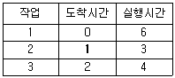
- 3
- 6
- 9
- 13
(정답률: 68%)
50. 분산처리 시스템에 대한 설명으로 옳지 않은 것은?
- 점진적 확장이 용이하다.
- 신뢰성 및 가용성이 증진된다.
- 시스템 자원을 여러 사용자가 공유할 수 있다.
- 중앙 집중형 시스템에 비해 시스템 개발이 용이하다.
(정답률: 67%)
51. 다중 처리기 운영체제 구조 중 주/종(Master/Sl ave) 처리기에 대한 설명으로 옳지 않은 것은?
- 주 프로세서가 고장 날 경우에도 전체 시스템은 작동한다.
- 비대칭 구조를 갖는다.
- 종 프로세서는 입출력 발생 시 주 프로세서에게 서비스를 요청한다.
- 주 프로세서는 운영체제를 수행한다.
(정답률: 72%)
52. UNIX 파일시스템 구조에서 데이터가 저장된 블록의 시작 주소를 확인할 수 있는 블록은?
- 부트 블록
- i-node 블록
- 슈퍼 블록
- 데이터 블록
(정답률: 63%)
53. 교착상태의 해결 방안 중 다음 사항에 해당하는 것은?
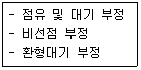
- prevention
- avoidance
- detection
- recovery
(정답률: 55%)
54. 운영체제를 기능에 따라 분류할 경우 제어 프로그램과 가장 거리가 먼 것은?
- 데이터 관리 프로그램(Data management program)
- 감시 프로그램 (Supervisor program)
- 작업 제어 프로그램 (Job control program)
- 서비스 프로그램 (Service program)
(정답률: 66%)
55. 프로세스의 정의로 거리가 먼 것은?
- 운영체제가 관리하는 실행 단위
- PCB를 갖는 프로그램
- 동기적 행위를 일으키는 주체
- 실행 중인 프로그램
(정답률: 70%)
56. 운영체제에 대한 설명으로 옳지 않은 것은?
- 운영체제는 다수의 사용자가 컴퓨터 시스템의 제한된 자원을 사용할 때 생기는 분쟁들을 해결한다.
- 운영체제는 사용자와 컴퓨터 시스템 사이에 위치하여 컴퓨터 시스템이 제공하는 모든 하드웨어와 소프트웨어의 기능을 모두 사용할 수 있도록 제어(Control)해 주는 가장 중요한 기본적인 하드웨어이다.
- 운영체제는 컴퓨터의 성능을 극대화하여 컴퓨터 시스템을 효율적으로 사용할 수 있도록 한다.
- 운영체제는 처리기(Processor), 기억장치, 주변장치 등 컴퓨터 시스템의 하드웨어 자원들을 제어한다.
(정답률: 55%)
57. 운영체제의 성능평가 요인 중 다음 설명에 해당하는 것은?
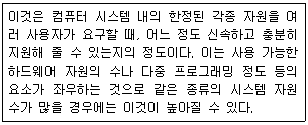
- Throughput
- Availability
- Turn around Time
- Reliability
(정답률: 61%)
58. 회전 지연 시간을 최적화하기 위한 스케줄링 기법은 탐구 시간을 필요로 하지 않는 고정 헤드 디스크 시스템이나, 각 트랙마다 헤드를 갖는 드럼 등의 보조 기억장치에서 사용된다. 회전 시간의 최적화를 위해 구현된 디스크 스케줄링 기법은?
- C-SCAN
- Sector Queuing
- SSTF
- FCFS
(정답률: 39%)
59. HRN 방식으로 스케줄링 할 경우, 입력된 작업이 다음과 같을 때 처리되는 작업 순서로 옳은 것은?
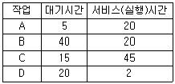
- A → B → C → D
- A → C → B → D
- D → B → C → A
- D → A → B → C
(정답률: 69%)
60. LRU 교체 기법에서 페이지 프레임이 3일 경우 페이지 호출 순서가 3인 곳(화살표 부분)의 빈 칸을 위에서부터 아래쪽으로 옳게 나열된 것은?
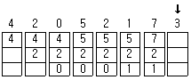
- 3, 2, 1
- 7, 3, 1
- 7, 2, 3
- 5, 2, 3
(정답률: 69%)
4과목: 소프트웨어 공학
61. 객체에게 어떤 행위를 하도록 지시하는 명령은?
- Class
- Instance
- Object
- Message
(정답률: 69%)
62. 소프트웨어 품질 목표 중 사용자의 요구 기능을 충족시키는 정도를 의미하는 것은?
- Correctness
- Integrity
- Flexibility
- Portability
(정답률: 62%)
63. 다음 중 가장 결합도가 강한 것은?
- data coupling
- stamp coupling
- common coupling
- control coupling
(정답률: 54%)
64. 럼바우 분석 기법에서 정보 모델링이라고도 하며, 시스템에서 요구되는 객체를 찾아내어 속성과 연산 식별 및 객체들 간의 관계를 규정하여 객체 다이어그램으로 표시하는 모델링은?
- 동적 모델링
- 객체 모델링
- 기능 모델링
- 정적 모델링
(정답률: 71%)
65. 소프트웨어 개발의 생산성에 영향을 미치는 요소로 가장 거리가 먼 것은?
- 프로그래머의 능력
- 팀 의사 전달
- 제품의 복잡도
- 소프트웨어 사용자의 능력
(정답률: 73%)
66. 다음 중 상위 CASE 도구가 지원하는 중요 기능으로 볼 수 없는 것은?
- 모델들 사이의 모순 검사 기능
- 모델의 오류 검증 기능
- 원시 코드 생성 기능
- 자료흐름도 작성 기능
(정답률: 69%)
67. 프로토타이핑 모형(Prototyping Model)에 대한 설명으로 옳지 않은 것은?
- 개발단계에서 오류 수정이 불가하므로 유지보수 비용이 많이 발생한다.
- 최종 결과물이 만들어지기 전에 의뢰자가 최종 결과물의 일부 또는 모형을 볼 수 있다.
- 프로토타입은 발주자나 개발자 모두에게 공동의 참조 모델을 제공한다.
- 프로토타입은 구현단계의 구현 골격이 될 수 있다.
(정답률: 76%)
68. 다음은 어떤 프로그램 구조를 나타낸다. 모듈 F에서의 fan-in과 fan-out의 수는 얼마인가?
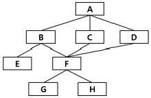
- fan-in: 2 fan-out:3
- fan-in: 3 fan-out:2
- fan-in: 1 fan-out:2
- fan-in: 2 fan-out:1
(정답률: 73%)
69. 모듈(module)의 응집도(cohesion)가 약한 것부터 강한 순서로 옳게 나열된 것은?
- 기능적응집 → 시간적응집 → 논리적응집
- 시간적응집 → 기능적응집 → 논리적응집
- 논리적응집 → 시간적응집 → 기능적응집
- 논리적응집 → 기능적응집 → 시간적응집
(정답률: 50%)
70. 소프트웨어 프로젝트(Project)의 특징에 대한 설명으로 가장 거리가 먼 것은?
- 모든 소프트웨어 프로젝트는 항상 시작과 끝이 있다.
- 모든 소프트웨어 프로젝트는 서로 다르다.
- 모든 소프트웨어 프로젝트는 대단위 사업을 의미한다.
- 모든 소프트웨어 프로젝트는 개략적인 범위 정의에서부터 시작하여 점차 구체화하여 구현해 간다.
(정답률: 70%)
71. 소프트웨어 개발 모델 중 나선형 모델의 네 가지 주요활동이 순서대로 나열된 것은?(일부 컴퓨터에서 보기가 정상적으로 보이지 않아서 괄호 뒤에 다시 표기 하여 둡니다.)
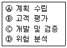
- Ⓐ-Ⓑ-Ⓓ-Ⓒ 순으로 반복(A-B-D-C 순으로 반복)
- Ⓐ-Ⓓ-Ⓒ-Ⓑ 순으로 반복(A-D-C-B 순으로 반복)
- Ⓐ-Ⓑ-Ⓒ-Ⓓ 순으로 반복(A-B-C-D 순으로 반복)
- Ⓐ-Ⓒ-Ⓑ-Ⓓ 순으로 반복(A-C-B-D 순으로 반복)
(정답률: 70%)
72. 블랙박스 검사 기법에 해당하는 것으로만 짝지어진 것은?
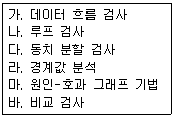
- 가, 나
- 가, 라, 마, 바
- 나, 라, 마, 바
- 다, 라, 마, 바
(정답률: 71%)
73. 소프트웨어 공학의 전통적인 개발 방법인 선형 순차 모형의 순서를 옳게 나열한 것은?
- 구현 → 분석 → 설계 → 테스트 → 유지보수
- 유지보수 → 테스트 → 분석 → 설계 → 구현
- 분석 → 설계 → 구현 → 테스트 → 유지보수
- 테스트 → 설계 → 유지보수 → 구현 → 분석
(정답률: 77%)
74. 객체에 대한 특성을 설명한 것으로 가장 옳지 않은 것은?
- 객체마다 각각의 상태를 갖고 있다.
- 식별성을 가진다.
- 행위에 대하여 그 특징을 나타낼 수 있다.
- 일정한 기억장소를 가지고 있지 않다.
(정답률: 78%)
75. 소프트웨어 품질보증을 위한 FTR의 지침사항으로 가장 옳지 않은 것은?
- 논쟁과 반박의 제한성
- 의제의 무제한성
- 제품 검토의 집중성
- 참가인원의 제한성
(정답률: 72%)
76. 소프트웨어 재공학은 어떤 유지보수 측면에서 소프트웨어 위기를 해결하려고 하는 방법인가?
- 수정(Corrective) 유지보수
- 적응(Adaptive) 유지보수
- 완전화(Perfective) 유지보수
- 예방(Preventive) 유지보수
(정답률: 52%)
77. 소프트웨어 재사용에 대한 설명으로 틀린 것은?
- 새로운 개발 방법론의 도입이 용이하다.
- 개발 시간과 비용이 감소한다.
- 프로그램 생성 지식을 공유할 수 있다.
- 기존 소프트웨어에 재사용 소프트웨어를 추가하기 어려운 문제점이 발생할 수 있다.
(정답률: 62%)
78. 비용예측방법에서 원시 프로그램의 규모에 의한 방법(COCOMO model)중 초대형 규모의 트랜잭션 처리시스템이나 운영체제 등의 소프트웨어를 개발하는 유형은?
- Organic
- Semi-detached
- Embedded
- Sequential
(정답률: 64%)
79. 소프트웨어 설계 시 제일 상위에 있는 main user function에서 시작하여 기능을 하위 기능들로 분할해 가면서 설계하는 방식은?
- 객체 지향 설계
- 데이터 흐름 설계
- 상향식 설계
- 하향식 설계
(정답률: 74%)
80. 어떤 모듈이 다른 모듈의 내부 논리 조직을 제어하기 위한 목적으로 제어신호를 이용하여 통신하는 경우이며, 하위 모듈에서 상위 모듈로 제어신호가 이동하여 상위 모듈에게 처리 명령을 부여하는 권리 전도현상이 발생하게 되는 결합도는?
- data coupling
- stamp coupling
- control coupling
- common coupling
(정답률: 67%)
5과목: 데이터 통신
81. 물리 네트워크 이용하여 논리 주소로 변환시켜 주는 프로토콜은?
- SMTP
- RARP
- ICMP
- DNS
(정답률: 67%)
82. OSI-7 layer의 데이터링크계층에서 사용하는 데이터 전송 단위는?
- 바이트
- 프레임
- 레코드
- 워드
(정답률: 61%)
83. PCM 시스템에서 상호 부호간 간섭(ISI) 측정을 위해 눈 패턴(eye pattern)을 이용하는데 여기서 눈을 뜬 상하의 높이가 의미하는 것은?
- 잡음에 대한 여유도
- 전송 속도
- 시간오차에 대한 민감도
- 최적의 샘플링 순간
(정답률: 60%)
84. 6비트를 사용하여 양자화 하는 경우 양자화 step수는?
- 8
- 16
- 32
- 64
(정답률: 68%)
85. TCP/IP 프로토콜에서 IP(Internet Protocol)에 대한 설명으로 거리가 먼 것은?
- 비연결형 전송 서비스 제공
- 비신뢰성 전송 서비스 제공
- 데이터그램 전송 서비스 제공
- 스트림 전송계층 서비스 제공
(정답률: 42%)
86. 주파수 대역폭이 fd[Hz] 이고 통신로의 채널용량이 6fd[bps]인 통신로에서 필요한 S/N비는?
- 15
- 31
- 63
- 127
(정답률: 55%)
87. HDLC의 동작 모드 중 전이중 전송의 점대점 균형 링크 구성에 사용되는 것은?
- PAM
- ABM
- NRM
- ARM
(정답률: 38%)
88. 메시지가 전송되기 전에 발생지에서 목적지까지의 물리적 통신 회선 연결이 선행되어야 하는 교환 방식은?
- 메시지 교환 방식
- 데이터그램 방식
- 회선 교환 방식
- ARQ 방식
(정답률: 67%)
89. 200.1.1.0/24 네트워크를 FLSM 방식을 이용하여 10개의 subnet으로 나누고 ip subnet -zero를 적용했다. 이때 서브네팅된 네트워크 중 10번째 네트워크의 broadcast IP 주소는?
- 200.1.1.159
- 201.1.5.175
- 202.1.11.191
- 203.1.255.245
(정답률: 39%)
90. 위상을 이용한 디지털 변조 방식은?
- ASK
- FSK
- PSK
- FM
(정답률: 54%)
91. 다음이 설명하고 있는 전송기술은?
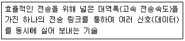
- 다중화
- 부호화
- 양자화
- 압축화
(정답률: 61%)
92. NRZ 전송부호에서 1의 경우 low level, 0의 경우 high level을 부여하는 것은?
- NRZ-X
- NRZ-L
- NRZ-M
- NRZ-S
(정답률: 46%)
93. 다음이 설명하고 있는 데이터 링크 제어 프로토콜은?(오류 신고가 접수된 문제입니다. 반드시 정답과 해설을 확인하시기 바랍니다.)
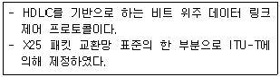
- PPP
- ADCCP
- LAP-B
- SDLC
(정답률: 43%)
94. 각 채널별로 타임 슬롯을 사용하나 데이터를 전송하고자 하는 채널에 대해서만 슬롯을 유동적으로 배정하며, 비트블록에 데이터뿐만 아니라 목적지 주소에 대한 정보도 포함하는 다중화방식은?
- 파장 분할 다중화방식
- 통계적 시분할 다중화방식
- 주파수 분할 다중화방식
- 코드 분할 다중화방식
(정답률: 63%)
95. 패킷 교환망에서 패킷이 적절한 경로를 통해 오류 없이 목적지까지 정확하게 전달하기 위한 기능으로 옳지 않은 것은?
- 흐름 제어
- 에러 제어
- 경로 배정
- 재밍 방지 제어
(정답률: 56%)
96. 다음이 설명하고 있는 것은?
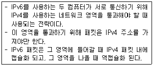
- Footer Translation
- Tunneling
- Packet Handling
- Single Stack
(정답률: 66%)
97. 8진 PSK 변조방식에서 변조속도가 2400[Baud]일 때 정보신호의 전송속도(bps)는?
- 2400
- 4800
- 7200
- 9600
(정답률: 70%)
98. TCP/IP 관련 프로토콜 중 응용 계층에서 동작하는 프로토콜은?
- ARP
- ICMP
- UDP
- HTTP
(정답률: 54%)
99. 해밍 거리가 8일 때, 수신 단에서 정정 가능한 최대 오류 개수는?
- 2
- 3
- 4
- 5
(정답률: 58%)
100. 다음이 설명하고 있는 ARQ 방식은?
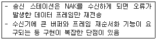
- Stop and Wait ARQ
- GO-back-N ARQ
- Flow-Sending ARQ
- Selective-Repeat ARQ
(정답률: 60%)